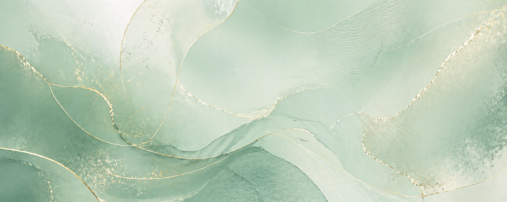
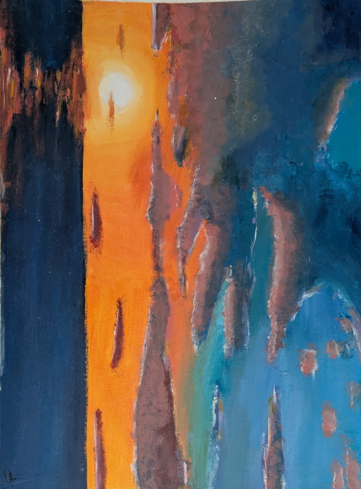

Des idées,
des réalisations.
Une sélection de projets réalisés au lycée, en autonomie et dans le cadre de ma formation. Chaque projet est une occasion d’expérimenter et d’apprendre.

01Bob, la serre connectée
Une serre intelligente pour suivre l’environnement d’une plante et automatiser son entretien.
Explorer le projet ↗Site de recherche du CDI
Un site pensé pour aider les élèves à trouver plus facilement des ouvrages au CDI.
Explorer le projet ↗
Carnet d’exploration artistique
Recherches, essais plastiques et expérimentations autour de l’image.
Voir le carnet ↗
Expérimentations visuelles
Peinture, photographie et recherche de compositions personnelles.
En savoir plus ↗Création audiovisuelle
Une réalisation collective pour expérimenter le récit par l’image animée.
Explorer le projet ↗